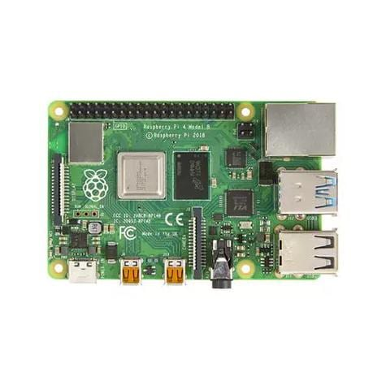

Raspberry Pi 4 Model B

树莓派最经典的量产型号，四核 Cortex-A72 主频 1.5GHz，双 micro-HDMI 支持双屏 4K，USB-C 供电，长期供货且二手流通极广，至今仍是入门学习与软路由的热门选择。
客观评测
Raspberry Pi 4 Model B 采用 BCM2711，四核 Cortex-A72 @ 1.5GHz，最高 8GB 内存，首次引入双 USB 3.0 与双 micro-HDMI 输出，供电改为 USB-C 5V/3A。足以胜任软路由、NAS、家庭自动化等场景，但 microSD 随机读写是主要瓶颈，重度使用建议通过 USB 外接 SSD 引导系统。
主观点评
这是无数人的“第一块 Linux 板”。性能谈不上澎湃，但胜在稳定、便宜、资料多，随便一个想法都有前人踩过的坑可抄。我用它跑过软路由、建过下载机、当过打印服务器，几年不出问题。高温降频是老毛病，贴个散热片、开个风扇就消停了。对新手而言它是最好的老师，对老手而言它是最省心的工具人。
优点与不足
- 生态成熟、教程海量，遇到问题几乎都能搜到答案
- 双 4K 输出与 USB 3.0，做软路由、下载机、电视盒都合适
- 长期供货、二手保值，整体持有成本低
- microSD 作为系统盘速度与寿命有限
- 满载温度较高，长时间运行建议加散热片或风扇
参数规格
| SoC | Broadcom BCM2711 |
|---|---|
| CPU | 四核 Arm Cortex-A72，主频 1.5GHz |
| GPU | VideoCore VI，OpenGL ES 3.0 |
| 内存 | 2GB / 4GB / 8GB LPDDR4 |
| 存储 | microSD 卡槽 |
| 视频输出 | 2× micro-HDMI，最高双 4Kp30 |
| USB | 2× USB 3.0 + 2× USB 2.0 |
| 网络 | 千兆以太网（支持 PoE，需 HAT） |
| 无线 | 双频 Wi-Fi 5（802.11ac）、蓝牙 5.0 / BLE |
| 供电 | USB-C 5V/3A（15W） |
| GPIO | 40-pin 扩展排针 |
| 尺寸 | 约 85 × 56mm |
| 系统支持 | Raspberry Pi OS、Ubuntu、LibreELEC 等 |